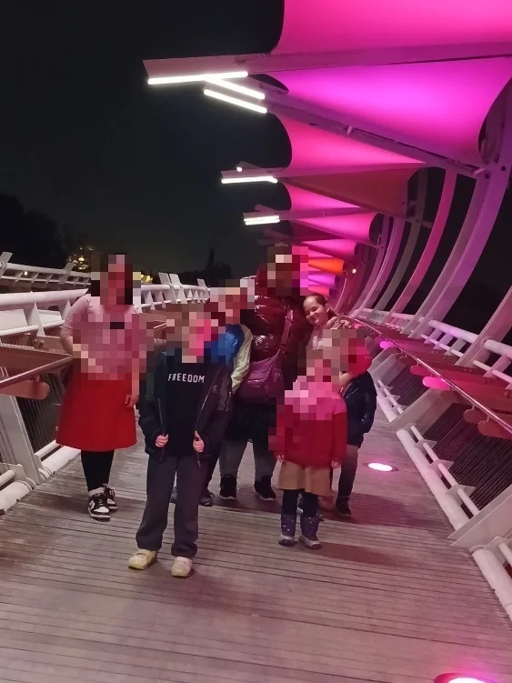
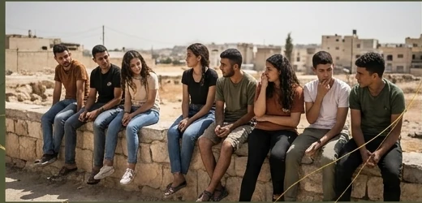
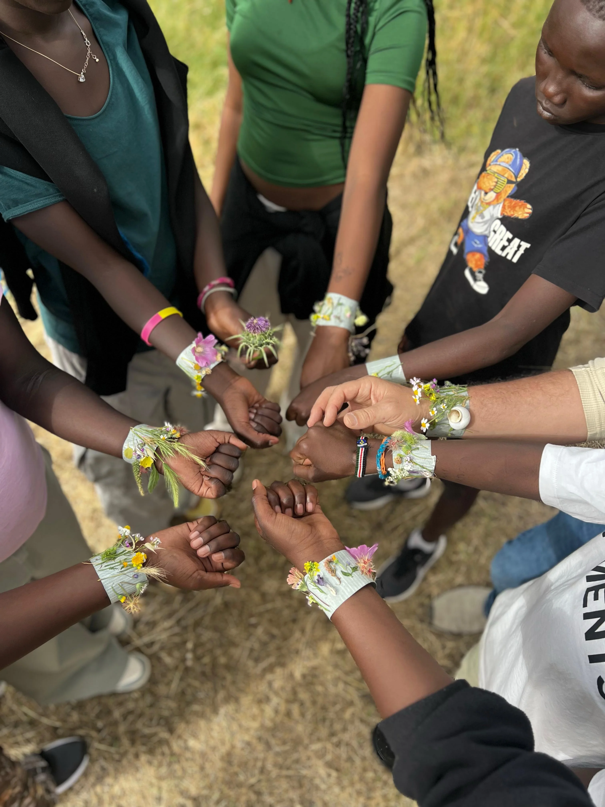

單親母親獨自承擔
養育、經濟壓力、情感創傷與突發危機，常在同一時間襲來。她們需要的不只是下一餐，也需要能重新站穩的關係與支持。
WHY IT MATTERS
外在危機也許有一天會停下來，但焦慮、破碎與不確定，常常留在家庭與年輕人的日常裡。

情境示意圖養育、經濟壓力、情感創傷與突發危機，常在同一時間襲來。她們需要的不只是下一餐，也需要能重新站穩的關係與支持。

情境示意圖戰爭之後，許多年輕人仍面對焦慮、低落與未來感缺失。他們真正需要的，不只是一次聚會，而是一個可以長期回來的地方。
福音的愛，需要進入真實生活處境中。
「不是再多一個活動，而是一個人願意留下來陪伴。」TWO PROJECTS · ONE HOPE
我們以兩條不同的路徑，陪伴家庭與青年；共同的核心，是建立長期關係，讓人在最不穩定的時刻仍有可以回來的地方。
GREEN OLIVE · 青年生命成長項目
戰爭之後，許多青少年面對焦慮與缺乏動力。但他們仍願意來到聚會中，尋找力量、關係與盼望。
生命陪伴，讓年輕人在不確定中，仍有一個可以回來的地方。
貝都因兒童被接觸
阿拉伯學校建立連結
青少年穩定參與門訓
建立安全、持續的關係空間，讓年輕人被理解、被聽見。
從信仰、品格與生命方向上，陪伴青年逐步成熟。
跨越語言、文化與族群隔閡，建立理解與信任。
LIVES CHANGED
青少年事工真正的果效，不只在出席人數，更在生命方向的翻轉。
ANNA · 女性賦能項目
不只是下一餐，也是母親終於可以喘一口氣、思考下一步的空間。亞拿以全人的關懷，陪伴母親重新站穩。
固定支持家庭
戰爭緊急援助
月度食品券發放
生命成長團契
提供穩定的超市購物券，在最急迫時刻托住基本生活，也減輕長期累積的心理焦慮。
親自走進家庭了解真實處境，提供專屬關懷與情感輔導。
透過敬拜、查經與分享，建立深度支持網絡，讓母親不再獨自承擔。
無論是否為信徒，都以禱告托住身心靈需要，建立信任與平安。
ONE FAMILY AT A TIME
真正的幫助，不只是解決一餐，而是讓一個家重新感覺自己還有盼望。
「我是在孤兒院長大的，從來沒有家人可以依靠。你們給予的幫助，讓我感受到自己其實擁有一個家。」— Malvina

TRUST TAKES TIME
真正的事工突破，不只是完成一場活動，而是在不同文化、語言與族群之間，一點一點建立理解與信任。
有些門，只有長期留下來的人，才等得到它慢慢打開。
2026 MID-YEAR FUNDING
兩個項目上半年已推進一半，但下半年的核心服事仍需要持續被托住。
以上金額依 2026 年中專案報告；實際執行與匯率可能依當期狀況調整。
在戰爭與通膨中，家庭可能立即面臨下一餐的斷炊危機與極大焦慮。
年輕人將失去在動盪中最需要的安全避風港與前線同工的生命引導。
GIVE · PRAY · WALK TOGETHER
每一張購物券，都是一家人餐桌上多的一份食物；每一次奉獻，都可能是孩子成長路上的一份盼望；每一次禱告，都在向這些家庭與年輕人傳遞基督的愛。
奉獻時可指定註明「希望的錨—青橄欖」或「希望的錨—亞拿」，讓奉獻更清楚對應事工需要。